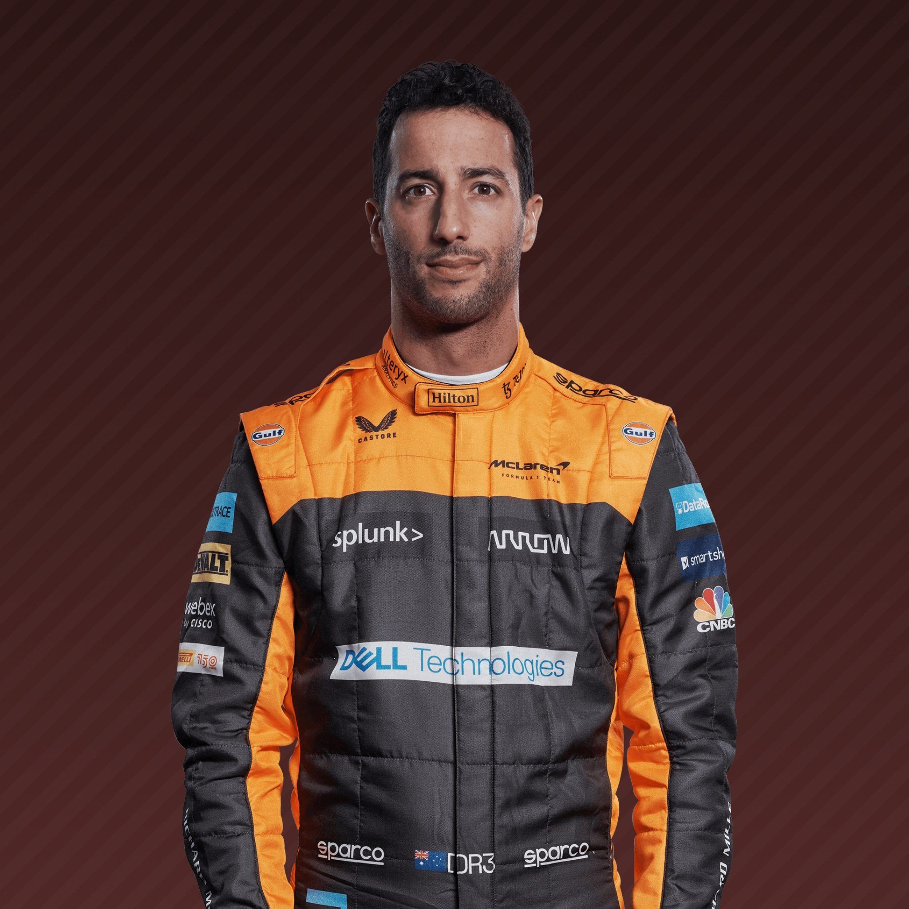
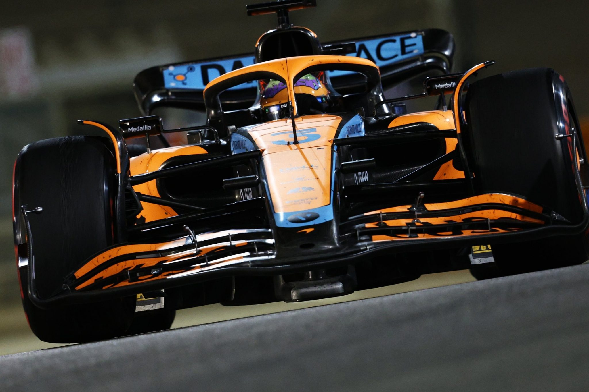
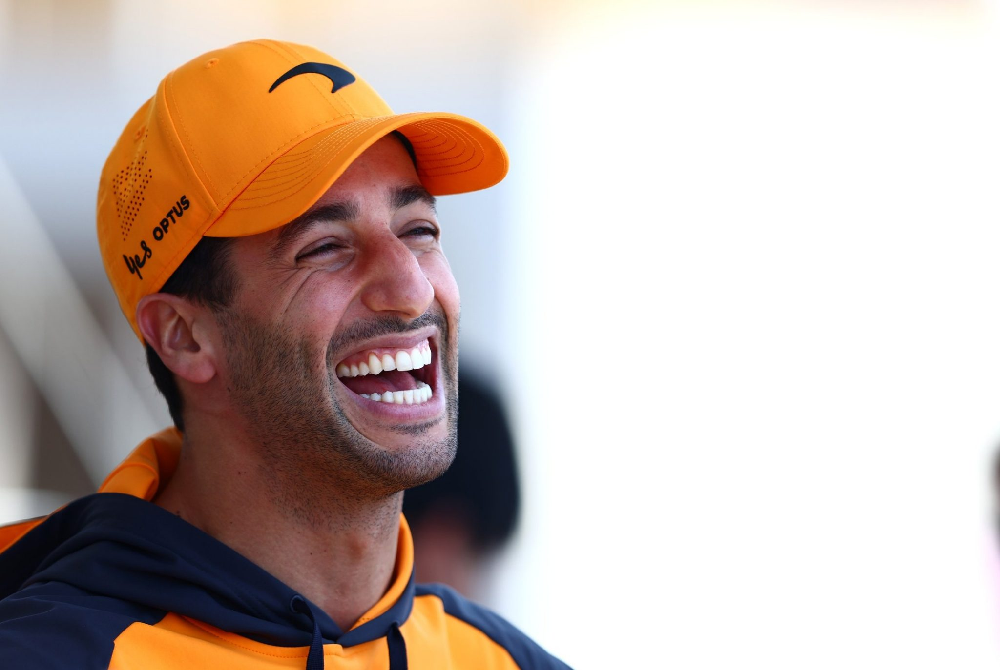
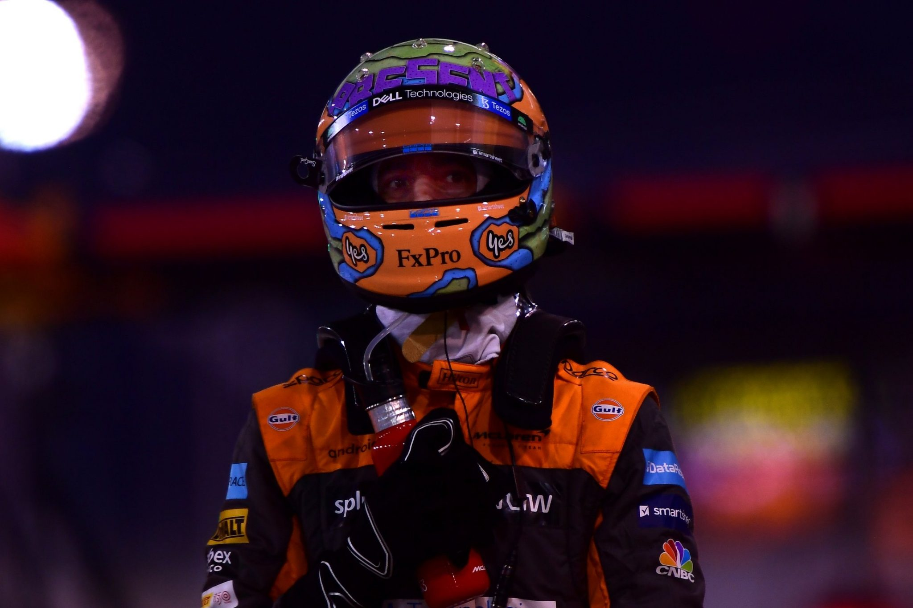
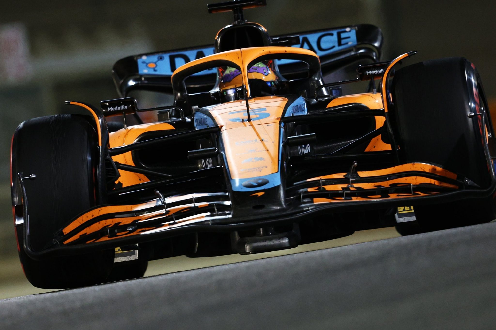
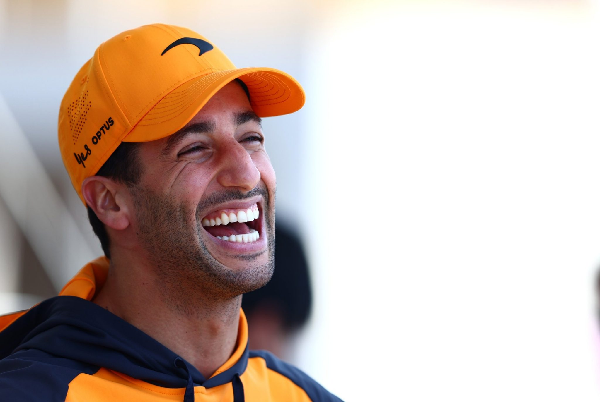
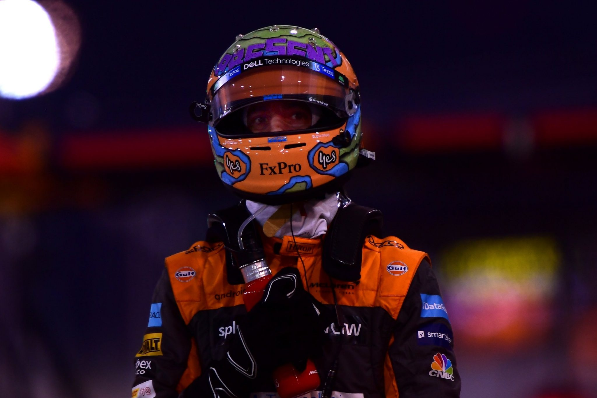

The self-styled “Honey Badger” is fuzzy on the outside and feisty on the inside.
Drivers beware because behind Ricciardo’s laidback persona and big grin is a razor-sharp racer with a bite.
The Australian combines all-out speed with impressive race craft.
Never afraid to push to the limits if it means pulling off a pass, Ricciardo is a proven race-winner,
capable of consistently finishing at the business end of the championship table given the right machinery.
A regular podium-finisher in his days with Red Bull, Ricciardo has christened the steps around the world with a dousing of Aussie culture
the ‘Shoey’ – as he quaffed champagne from a soggy racing boot.
Yes it’s goofy, but the trademark celebration illustrates why he is loved for his sense of humour but never underestimated on track.
His career’s next move to Renault’s works team in 2019 brought fresh challenges for the Perth pilot,
but failed to deliver his dream of following Jack Brabham and Alan Jones
as the next world champion from Down Under and he moved on to McLaren for 2021.
here he has found a tough young team mate in Lando Norris, but has nevertheless returned to winning ways.
Whatever happens next, Ricciardo is sure to keep on smiling.
  
| Team | McLaren |
|---|---|
| Country | Australia |
| Podiums | 32 |
| Points | 1309 |
| Grand Prix entered | 230 |
| World Championships | N/A |
| Highest race finish | 1 (x8) |
| Highest grid position | 1 |
| Date of birth | 01/07/1989 |
| Place of birth | Perth, Australia |
Biography
The self-styled “Honey Badger” is fuzzy on the outside and feisty on the inside.
Drivers beware because behind Ricciardo’s laidback persona and big grin is a razor-sharp racer with a bite.
The Australian combines all-out speed with impressive race craft.
Never afraid to push to the limits if it means pulling off a pass, Ricciardo is a proven race-winner,
capable of consistently finishing at the business end of the championship table given the right machinery.
A regular podium-finisher in his days with Red Bull, Ricciardo has christened the steps around the world with a dousing of Aussie culture
the ‘Shoey’ – as he quaffed champagne from a soggy racing boot.
Yes it’s goofy, but the trademark celebration illustrates why he is loved for his sense of humour but never underestimated on track.
His career’s next move to Renault’s works team in 2019 brought fresh challenges for the Perth pilot,
but failed to deliver his dream of following Jack Brabham and Alan Jones
as the next world champion from Down Under and he moved on to McLaren for 2021.
here he has found a tough young team mate in Lando Norris, but has nevertheless returned to winning ways.
Whatever happens next, Ricciardo is sure to keep on smiling.
Gallery
  